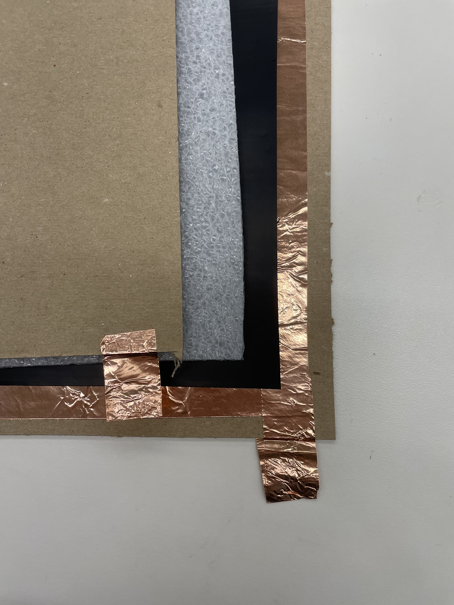
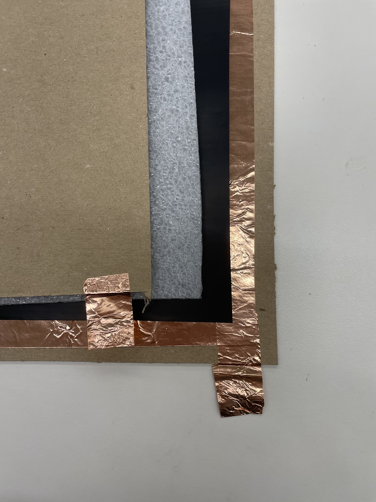

This project was originally envisioned as an installation — a playground of a roomful of oversized components of a controller whose design is common in electronic music performance – namely, knobs, sliders, buttons, as well as a rudimentary patch bay as well as an associated sound system that outputs the sonic results of the physical actions enacted upon the components. Every component is to be “comfortable” to interact with, whether it is fuzzy, soft, or squishy, and resembling furniture items clad in stuffed fabric; every component is to also require a reasonable amount of effort in order to move them physically, but not too difficult to do so that it prevents effective (and fun) play. My primary motivations in regards to this project are to demystify electronic music apparatuses as well as musical performances with those apparatuses; to recognize and venerate the role of the human body and all of its embodied physicality in electronic music performance; and to break down structural, enactive and affective barriers in approaching electronic music and its production. I believe that collaborative play is an integral part of most musical practices, and that electronic music should embrace the co-creation of sound in a way that prioritizes learning through awareness of one’s own body as well as other bodies. Therefore, this project serves as an experiment in creating an engaging learning environment that is so desperately needed for electronic music.
However, I've had to downscale, as show in the video!
 
